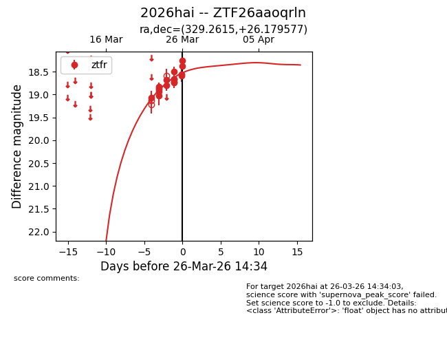
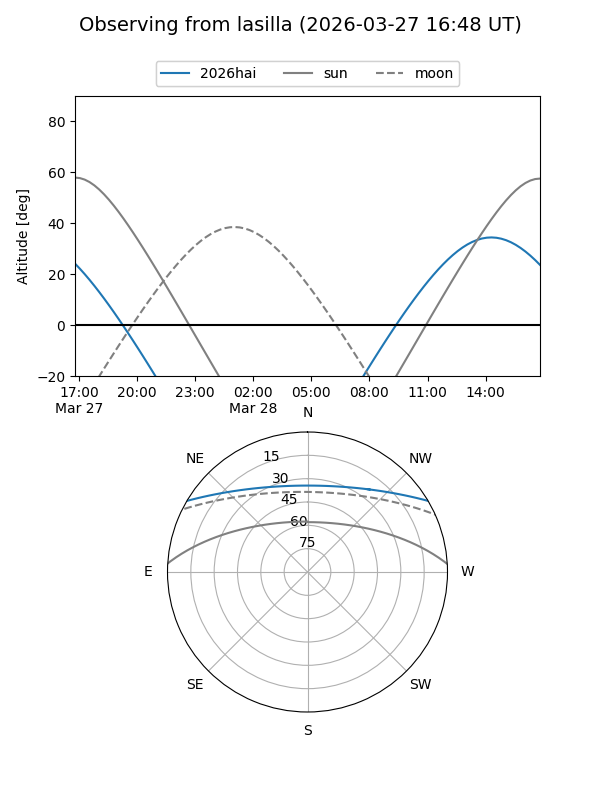
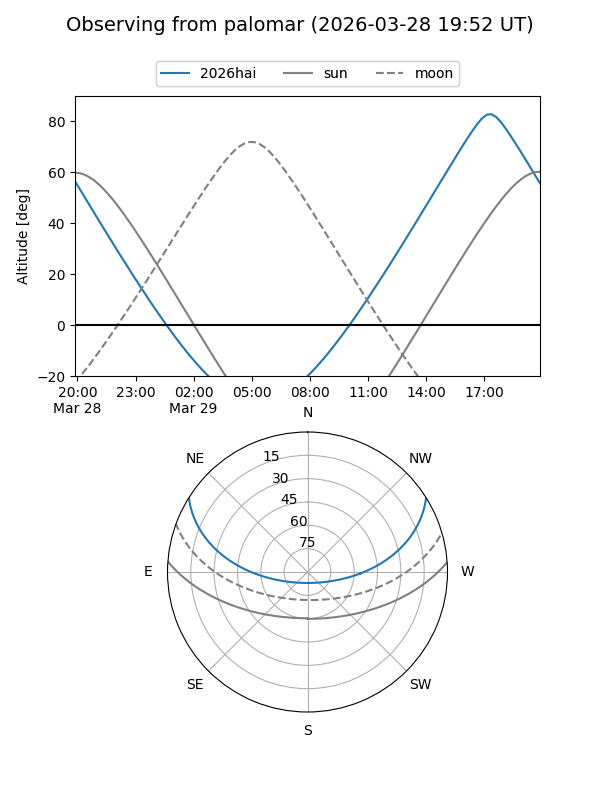
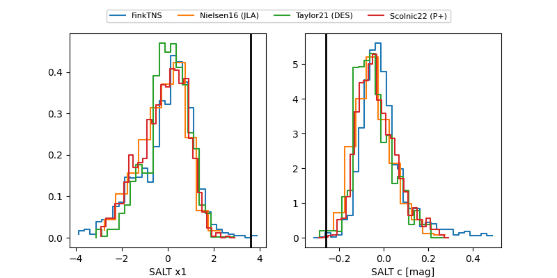

2026hai
Target 2026hai at 2026-03-26 14:36
Aliases and brokers:
FINK: link
Lasair: link
ALeRCE: link
TNS: link
YSE: link
alt names
ZTF26aaoqrln (ztf,fink_ztf)
2026hai (tns,yse)
Coordinates:
equatorial (ra, dec) = 329.2615,+26.17958
equatorial (HMS+DMS) = 21:57:02.76,+26:10:46.48
galactic (l, b) = (81.0019,-22.16246)
Flags:
Photometry:
last ztfr=18.26
17 ztfr detections
Lightcurve

Visibility


Additional plots
